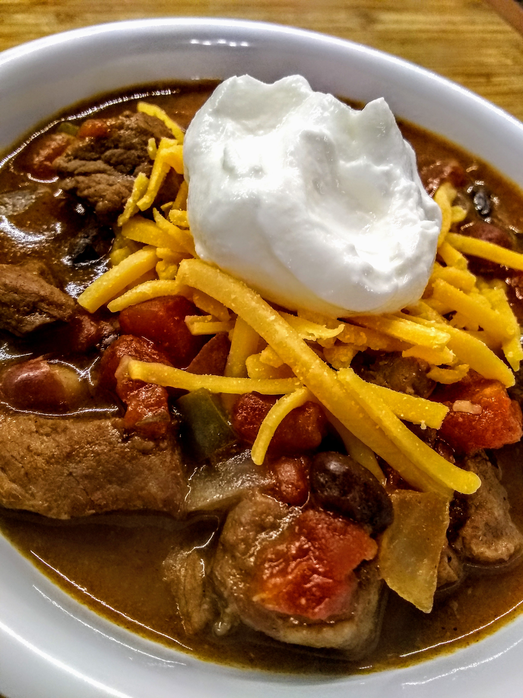

Slow-Cooker Stew Meat Chili

Description
This hardy chili is quick and easy to prepare.After browning the meat and adding in the spices to give them
a toasted flavor, you just toss everything into the slow-cooker and let it do all the work throughout the day.
Garnish with sour cream, cheese, and/or parsley.
Ingredients
- 1 1/2 tablespoons vegetable oil
- 3/4 pound cubed beef stew meat
- 2 tablespoons chili powder
- 1 teaspoon ground cumin
- 2 tablespoons all-purpose flour
- 1 (28 ounce) can diced tomatoes
- 1 (16 ounce) can black beans, rinsed and drained
- 1 (16 ounce) can kidney beans, rinsed and drained
- 1 3/4 cups beef broth, divided
- 1 large onion, chopped
- 1 small green or red bell pepper, chopped
- 1/4 cup chopped fresh parsley
- 2 tablespoons barbeque sauce
- 1 1/2 tablespoons brown sugar
- 2 cloves garlic, or more to taste, minced
- 3/4 teaspoon salt
Directions
- Heat oil in a large skillet over medium-high heat. Add stew meat and brown for 2 minutes,
stirring often. Add chili powder and cumin; cook and stir until fragrant, about 1 minute.
Stir in flour and cook for 1 minute more. Transfer meat to a large slow cooker.
- Add diced tomatoes, black beans, kidney beans, 1 1/2 cups beef broth, onion, bell pepper,
parsley, barbecue sauce, brown sugar, garlic, and salt to the slow cooker; stir until well combined.
r- Cover and cook on Low, stirring occasionally, until beef is tender, 6 to 8 hours.
Thin the chili with remaining beef broth as it cooks, if consistency is too thick.